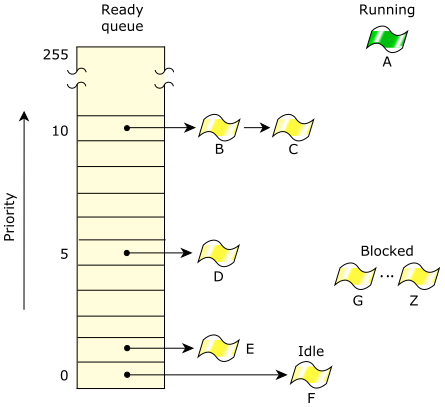

The ready queue is a simplified version of a kernel data structure consisting of a queue with one entry per priority. Each entry in turn consists of another queue of the threads that are READY at the priority. Any threads that aren't READY aren't in any of the queues—but they will be when they become READY.
Let's first consider the ready queue on a single-core system.

In the above diagram, threads B–F are READY. Thread A is currently running. All other threads (G–Z) are BLOCKED. Threads A, B, and C are at the highest priority, so they'll share the processor based on the running thread's scheduling policy.
The active thread is the one in the RUNNING state.
Every thread is assigned a priority. The scheduler selects the next thread to run by looking at the priority assigned to every thread in the READY state (i.e., ready to run on the CPU). The thread with the highest priority that's at the head of its priority's queue is selected to run. In the above diagram, thread A was formerly at the head of priority 10's queue, so thread A was moved to the RUNNING state.
On a multicore system, this becomes a lot more complex, with issues such as processor-affinity optimizations and runmasks for various threads, making the scheduling decisions more complicated. But the ready queue concept carries over as the primary driver of scheduling decisions for multicore systems as well.